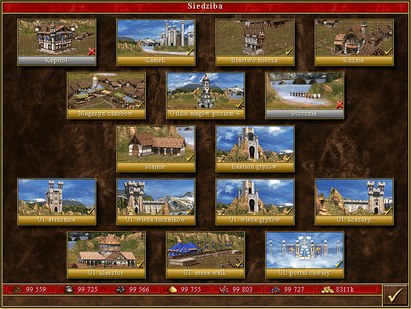

Miasto Zamek - ang. Castle - to kontynuacja zamku Rycerza z Heroes I oraz Heroes II. W poprzednich częściach reprezentowało ono królestwo Enroth i ród Ironfist - Żelazna Pięść - których znakiem jest lew, nota bene - ikona oraz okładka Heroes II. Król Roland po pokonaniu brata Archibalda i objęciu tronu ożenił się z Catherine Gryphonheart, księżniczką zamorskiego kraju Erathia. Miał z nią syna Nicolaia. Niestety, niedługo potem, Katarzyna została wezwana do ojczyzny na pogrzeb ojca. To właśnie ta podróż jest przedstawiona w intro do Heroes III, a ikona gry - tarcza z gryfem - jest symbolem dynastii Gryphonheart, czyli Gryfie Serce. Fabuła Heroes III opowiada o odrodzeniu Erathii zniszczonej pod nieobecność Katarzyny, a także o dalszych wojnach, zwłaszcza z Kreeganami z Inferno.
Zamek to prawdopodobnie najlepsze miasto do rozpoczęcia swojej przygody w świecie Heroes. Wszystkie jednostki są co najmniej dobre, a niektóre najlepsze na swych poziomach. Początkowy etap gry opiera się przede wszystkim na łucznikach, których należy prędko ulepszyć w celu zyskania podwójnego strzału, oraz mnichach. Te dwa dystansowe oddziały są kluczowe dla sprawnego podboju terenu. Grając zamkiem powinno się szybko pozyskać gryfy oraz kawalerzystów. Jeśli gra toczy się na niskim bądź normalnym poziomie trudności, to skupić należy się na wybudowaniu Portalu chwały, co pozwoli na rekrutację niezastąpionych aniołów. Ich patronat działa z korzyścią na morale wojsk. Zamek nie należy, niestety, do najtańszych miast w rozbudowie. Mile widziane są bardzo duże pokłady złota i klejnotów.
[Źródło tekstu]
